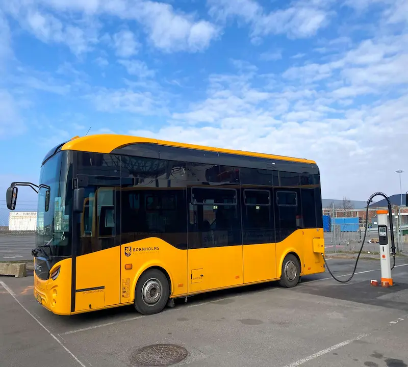
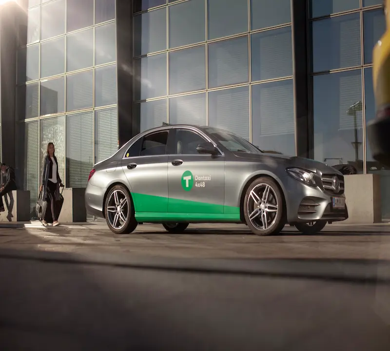
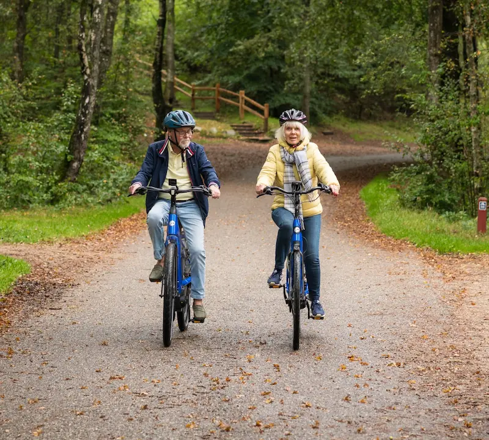
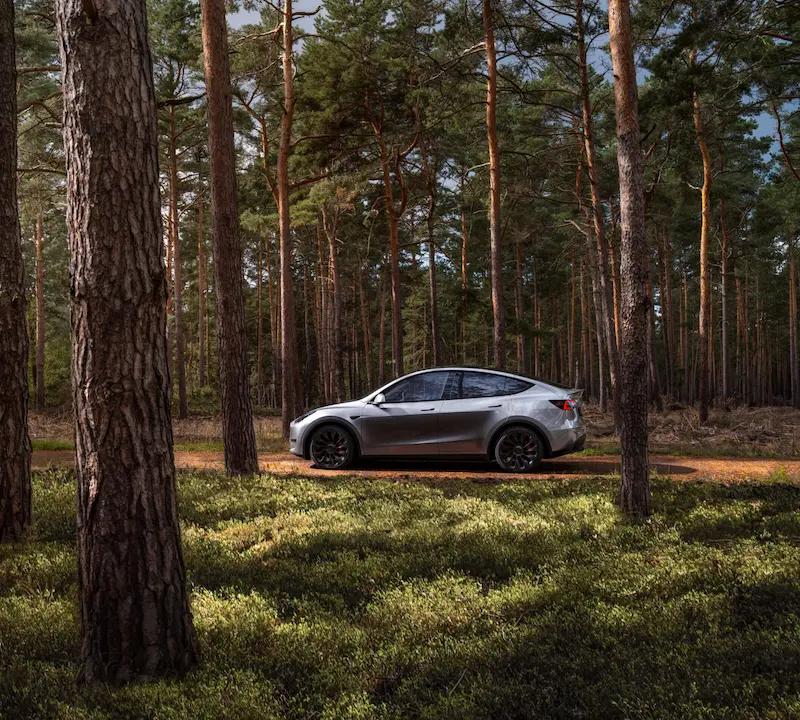

Transport
Et overblik over mulighederne for transport rundt på Bornholm og til Bornholm.
Transport til Bornholm
For at komme til Bornholm, er der følgende muligheder
Færge
Da Bornholm er en ø, er det selvfølgelig muligt at tage færgen
dertil. Det er praktisk hvis man gerne vil have bil med, eller
bare gerne vil have en mere økonomisk tur.
Det er muligt at tage færgen fra Køge, eller fra Ystad og komme
direkte til Rønne.

Fly
Hvis man ikke er interesseret i at have egen bil med, eller bare vil hurtigt frem, så kan man tage flyet. Turen tager 40 minutter fra Kastrup.

Transport på Bornholm
Når du skal rundt på Bornholm, har du følgende muligheder
Bus
Ligesom de fleste andre steder, er det muligt at tage bussen når man skal rundt, men i og med at Bornholm er i udkantsdanmark, så kan der godt være lang tid mellem busserne.
Taxa
Hvis man har masser af mønt på lommen, kan man selvfølgelig bare køre med taxa når man skal rundt på øen.
Cykel
Er man til at cykle rundt, er det også en mulighed. Bornholm er en lille ø med flot natur og massevis af cykelstier, så det er intet problem at komme rundt.
Billeje
Vil du gerne have mere frihed end du får med offentlig transport, så er der også mulghed for at leje en bil på Bornholm.
